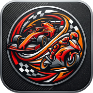

Cargando temporada de F1 y MotoGP…
25 · 18 · 15 · 12 · 10 · 8 · 6 · 4 · 2 · 1
8 · 7 · 6 · 5 · 4 · 3 · 2 · 1
25 · 20 · 16 · 13 · 11 · 10 · 9 · 8 · 7 · 6 · 5 · 4 · 3 · 2 · 1
12 · 9 · 7 · 6 · 5 · 4 · 3 · 2 · 1